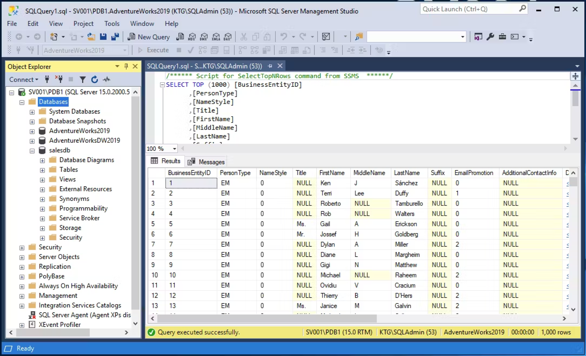
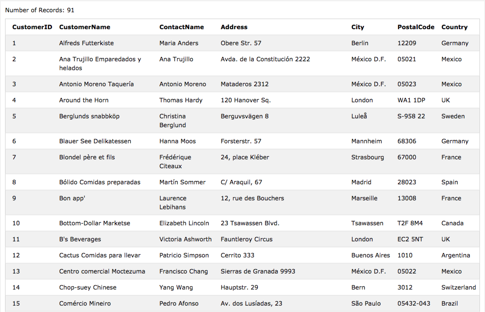

What Is SQL & How Does It Work? A Guide to Structured
Query Language
SQL or Structured Query Language is a critical tool for data professionals. It is undoubtedly the most important language for getting a job in the field of data analysis or data sciences. Millions of data points are being generated every minute and raw data does not have any story to tell. After all this data gets stored in databases and professionals use SQL to extract this data for further analysis.
In this blog post, we will cover what is SQL and how does it work. SQL is fairly simple, thanks to easy syntaxes of this language. Let’s dig into understanding this Structured Query Language by asking this simple question.
What is SQL And How Does it Work?
SQL is the most common language for extracting and organising data that is stored in a relational database. A database is a table that consists of rows and columns. SQL is the language of databases. It facilitates retrieving specific information from databases that are further used for analysis. Even when the analysis is being done on another platform like Python or R, SQL would be needed to extract the data that you need from a company’s database.
SQL manages a large amount of data, especially if there is a lot of data that is being written simultaneously and there are too many data transactions. There are different versions and frameworks for SQL, the most commonly used is MySQL. MySQL is an open-source solution that helps facilitate SQL’s role in managing back-end data for web applications. Companies such as Facebook, Instagram, WhatsApp, etc. all use SQL for back-end data storage and data processing solutions. When an SQL query is written & run (or parsed), it is processed by a query optimiser. The query reaches SQL server, where it compiles in three phases; Parsing, Binding and Optimisation.
In the third step, all possible permutations and combinations are generated to find the most effective query execution plan in a reasonable time. The shorter the query takes, the better it is.
What is SQL Used for?
Now that we understand what is SQL and how does it work, let’s try to see what SQL can do. This programming language has various uses for data analysts & data science professionals. It is particularly helpful because it can:
Imagine how difficult life would be if we did not have a way to control the database in this format. After getting a sense of what SQL is used for, let’s try our hands at learning SQL on an actual database.
What Is SQL And How Does It Work: Learning SQL With Some Basic SQL Commands
We have learned above what SQL is used for, so let’s try out each of these things on a real dataset. As an example, we have chosen a database of customers at an e-commerce store. This is what it looks like this:
Here are some commands that we will be learning about, and later practicing as well. Command and description:
CREATE
Creates a new table, a view of a table, or another object in the database.
ALTER
Modifies an existing database object, such as a table.
DROP
Deletes an entire table, a view of a table or other objects in the database.
SELECT
Retrieves certain records from one or more tables.
INSERT
Creates a record.
UPDATE
Modifies a record.
DELETE
Deletes a record.
GRANT
Gives a privilege to users.
REVOKE
Takes back privileges granted from users.
If you notice, the commands ‘create, alter & drop’ define the complete structure of data. They come under the ‘Data Definition Language’ set of commands. Similarly, ‘select, insert, update, delete’ fall under Data Manipulation Language & ‘grant, revoke’